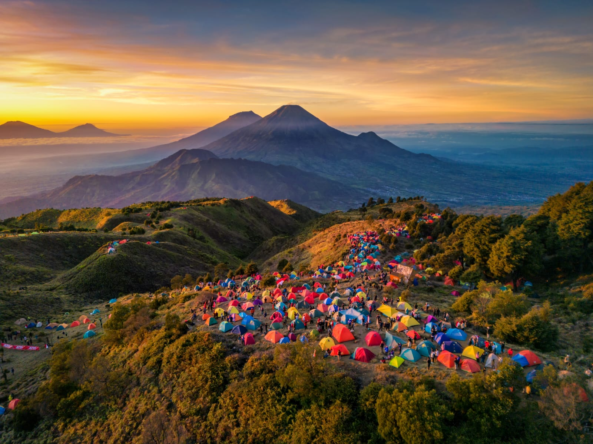
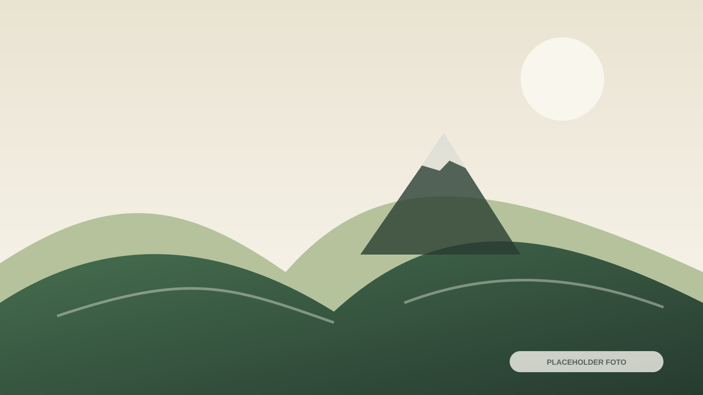
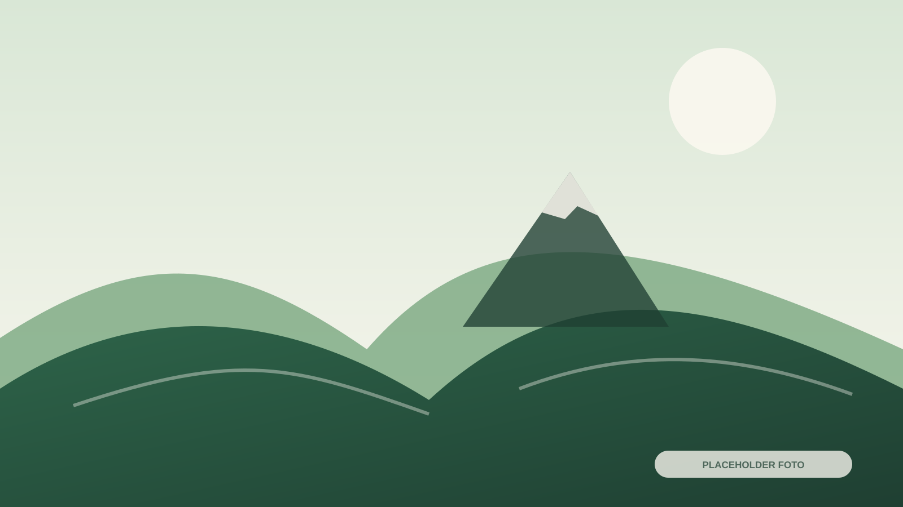

Desa Wisata Patakbanteng
Jelajahi Keindahan Patakbanteng
Desa wisata di lereng Gunung Prau yang menghadirkan pengalaman pendakian, wisata alam, budaya, agrowisata, dan kehidupan masyarakat pegunungan.
Gunung Prau
Akses pendakian melalui Basecamp Patakbanteng
Berbasis Desa
Layanan dikelola dan didukung masyarakat lokal
Agrowisata
Pertanian, konservasi, dan edukasi
Pusat Informasi
Kontak dikelompokkan sesuai kebutuhan
Pilih kebutuhan
Mulai dari tujuan perjalanan Anda
Jalur cepat menuju informasi yang paling sering dibutuhkan wisatawan sebelum berkunjung.
Pendakian Gunung Prau
Informasi jalur, persiapan, SOP, dan layanan pendukung.

Rumah Bibit
Konservasi dan wisata edukasi pertanian berbasis masyarakat.

Paket Wisata
Pilihan pendakian, desa, edukasi, agrowisata, dan rombongan.

Homestay
Temukan pilihan tempat singgah dari penyedia lokal.

Transportasi
Jeep, ojek, dan informasi akses menuju lokasi.

Kuliner & UMKM
Kenali rasa dan produk masyarakat Patakbanteng.

Pemandu & Porter
Layanan resmi untuk mendukung kegiatan pendakian.

Informasi Perjalanan
Rute, estimasi, peta, dan etika berkunjung.
Video profil desa
Kenali Patakbanteng sebelum datang
Video profil dari Tim Universitas Airlangga akan ditempatkan pada bagian ini. Sistem memakai thumbnail agar halaman tetap ringan.
Tautan video belum tersedia
Isi videoProfilYoutube pada assets/js/config.js setelah tautan resmi diterima.

Destinasi unggulan
Lihat Semua AktivitasPengalaman utama di Patakbanteng

Layanan & fasilitas
Dukungan untuk perjalanan yang lebih tertata
Setiap layanan akan dilengkapi foto, kapasitas, kisaran harga, lokasi, dan kontak resmi setelah data diterima.
Homestay
Pilihan tempat singgah dan transit dari penyedia lokal.
Lihat DetailJeep & Ojek
Transportasi lokal menuju titik tertentu dan basecamp.
Lihat DetailPemandu & Porter
Dukungan resmi untuk kegiatan pendakian.
Lihat DetailRental & Dokumentasi
Peralatan camping serta dokumentasi wisata.
Lihat Detail
Peta transek desaDestinasi, fasilitas, titik penting, dan jalur utama akan ditandai pada peta final.
Orientasi kawasan
Kenali titik penting sebelum berangkat
Peta transek membantu pengunjung memahami susunan kawasan desa, lokasi layanan, destinasi, dan akses utama.
- Titik destinasi dan aktivitas
- Basecamp dan fasilitas umum
- Jalur utama dan titik penurunan
- Pusat informasi serta layanan darurat
Etika berkunjung
Datang sebagai tamu, pulang sebagai sahabat
Jaga Kebersihan
Bawa kembali sampah dan gunakan fasilitas secara bertanggung jawab.
Hormati Masyarakat
Hormati adat, aktivitas warga, dan ketenangan area permukiman.
Jaga Lingkungan
Tidak merusak tanaman dan selalu mematuhi arahan pengelola.
Rencanakan kunjungan ke Patakbanteng
Hubungi pusat informasi untuk memastikan layanan, jadwal, dan kebutuhan perjalanan Anda.